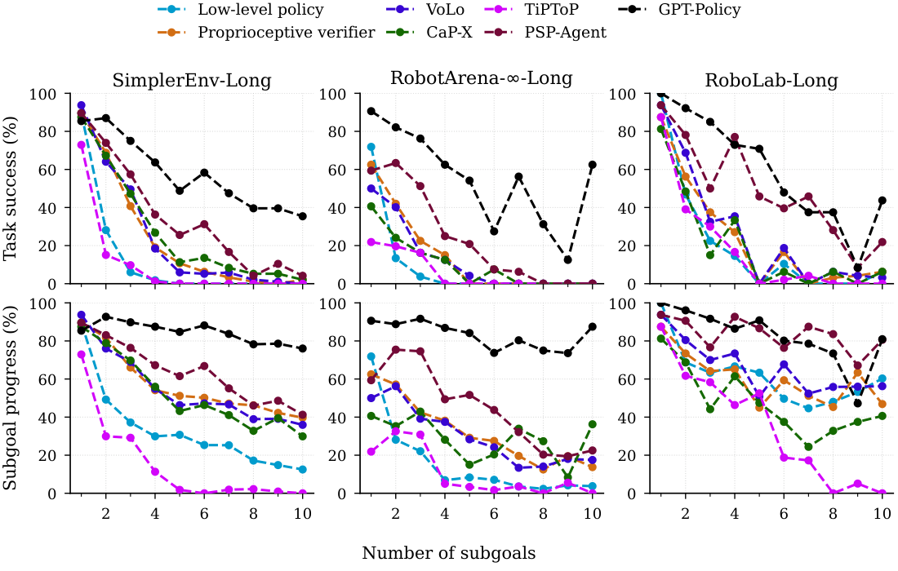
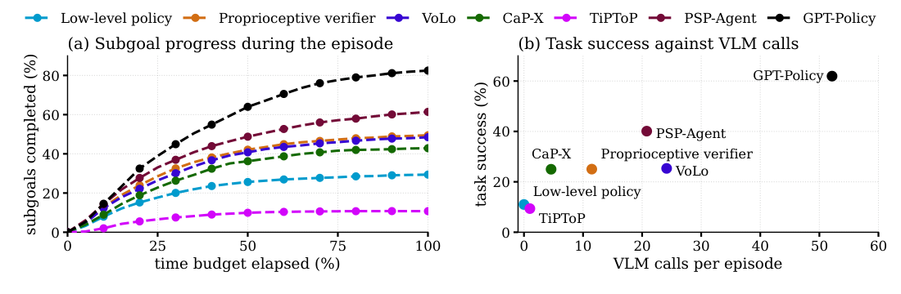
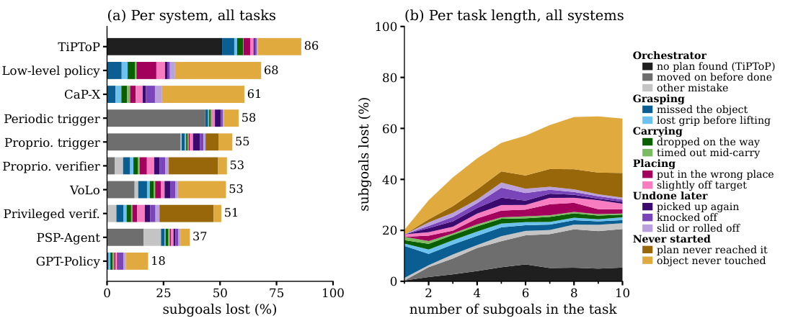
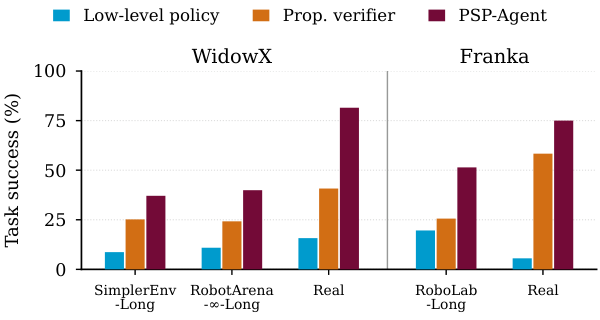

General-purpose robot manipulation policies learn short-horizon skills effectively, but degrade rapidly on long-horizon tasks. Existing benchmarks cannot isolate failures because task horizon is either too short or entangled with scene and object variations. We propose LADDER, a long-horizon robot manipulation benchmark scaling from 1 to 10 subgoals within the same environment over three suites (SimplerEnv-Long, RobotArena-∞-Long, and RoboLab-Long), 145 tasks, eight categories, two embodiments, and 2,024 simulated episodes per system. We evaluate two orchestration paradigms: text subgoals for learned low-level policies (VoLo) and tool selection orchestration (CaP-X, GPT-Policy, PSP-Agent, TiPToP). Given the full instruction directly, low-level policies achieve 85.4% on single-subgoal tasks, but drop to near zero on extended tasks. While orchestration remedies this, it remains bounded by physical execution errors of the low-level policy rather than high-level planning and achieves only ∼25%. Tool selection orchestration with GPT-Policy on GPT-6 Astra significantly outperforms learned-policy methods, but incurs significant time and cost budget and succeeds only ∼62%. Real-world experiments across two embodiments confirm the collapse of the low-level policy and the gain from orchestration. Project website: long-horizon-benchmark.github.io
Each incremental task extends a shorter one by exactly one subgoal while keeping the scene, the destinations and the task category fixed. Below: one scene family per suite at a short, a medium and a long horizon (successful episodes).
SimplerEnv-Long · PSP-Agent success
“put the carrot on the plate.” · 1 subgoal · Single destination
SimplerEnv-Long · PSP-Agent success
“put both carrots, both spoons and the eggplant on the plate” · 5 subgoals · Single destination · 3x speed
SimplerEnv-Long · PSP-Agent success
“put the four carrots, the three spoons and the three eggplants on the plate” · 10 subgoals · Single destination · 4x speed
RobotArena-∞-Long · PSP-Agent success
“put the blue bowl on the purple cloth.” · 1 subgoal · Single destination
RobotArena-∞-Long · PSP-Agent success
“first put the spoon on the cloth, then put the spoon in the pot, then put the chicken drumstick on the cloth, then put the chicken drumstick in the pot” · 4 subgoals · Relay · 2x speed
RobotArena-∞-Long · PSP-Agent success
“first put the spoon in the pot, then put the spoon on the cloth, then put the chicken drumstick in the pot, then put the chicken drumstick on the cloth, then put the corn cob in the pot, then put the corn cob on the cloth, then put the cheese on the cloth” · 7 subgoals · Relay · 3x speed
RoboLab-Long · PSP-Agent success
“put the banana in the bin.” · 1 subgoal · Single destination
RoboLab-Long · PSP-Agent success
“put the banana, the orange, the lemon, the lime, the avocado and the onion in the bin” · 6 subgoals · Single destination · 3x speed
RoboLab-Long · PSP-Agent success
“put the banana, both oranges, the lemon, the lime, the avocado, the onion, the lychee, the pumpkin and the pomegranate in the bin” · 10 subgoals · Single destination · 8x speed
Single destination, split destinations, transfers, relay routing, revisitations, exclusions, ordered sequences and duplicate instances. Every subgoal is checked by a programmatic predicate on the simulator state.
SimplerEnv-Long · Proprioceptive verifier success
“put both carrots, both spoons and the eggplant on the plate” · 5 subgoals · Single destination · 3x speed
RobotArena-∞-Long · PSP-Agent success
“put the spoon and the corn cob on the cloth and put the chicken drumstick in the pot” · 3 subgoals · Split destination
RoboLab-Long · Proprioceptive trigger success
“move the orange, the lemon and the lime from the plate to the bin” · 3 subgoals · Transfer · 2x speed
SimplerEnv-Long · Proprioceptive verifier success
“first put the carrot on the plate, then put the carrot on the blue towel, then put the spoon on the plate, then put the spoon on the blue towel, then put the eggplant on the plate” · 5 subgoals · Relay · 3x speed
RobotArena-∞-Long · GPT-Policy success
“first put the spoon on the cloth, then put the spoon in the pot, then put the spoon on the cloth” · 3 subgoals · Revisit · 2x speed
RoboLab-Long · Privileged verifier success
“put everything except the red block and the blue block in the bin” · 4 subgoals · Exclusion · 3x speed
SimplerEnv-Long · GPT-Policy success
“first put the carrot on the plate, then put the spoon on the plate, then put the eggplant on the plate” · 3 subgoals · Ordered
RobotArena-∞-Long · GPT-Policy success
“put the three corn cobs on the cloth” · 3 subgoals · Duplicates · 2x speed
The same RoboLab-Long task under the low-level policy alone, the orchestrator variants, the external systems and the privileged verifier. Episodes are sampled at random from the evaluation, so failures are shown where they occurred.
RoboLab-Long · Low-level policy failure
“put the avocado and the banana on the plate and put the orange and the lime in the bin” · 4 subgoals · Split destination · 7x speed
RoboLab-Long · Periodic trigger success
“put the avocado and the banana on the plate and put the orange and the lime in the bin” · 4 subgoals · Split destination · 3x speed
RoboLab-Long · Proprioceptive trigger failure
“put the avocado and the banana on the plate and put the orange and the lime in the bin” · 4 subgoals · Split destination · 7x speed
RoboLab-Long · Proprioceptive verifier failure
“put the avocado and the banana on the plate and put the orange and the lime in the bin” · 4 subgoals · Split destination · 7x speed
RoboLab-Long · VoLo success
“put the avocado and the banana on the plate and put the orange and the lime in the bin” · 4 subgoals · Split destination · 6x speed
RoboLab-Long · CaP-X success
“put the avocado and the banana on the plate and put the orange and the lime in the bin” · 4 subgoals · Split destination · 3x speed
RoboLab-Long · TiPToP success
“put the avocado and the banana on the plate and put the orange and the lime in the bin” · 4 subgoals · Split destination · 2x speed
RoboLab-Long · PSP-Agent success
“put the avocado and the banana on the plate and put the orange and the lime in the bin” · 4 subgoals · Split destination · 4x speed
RoboLab-Long · GPT-Policy success
“put the avocado and the banana on the plate and put the orange and the lime in the bin” · 4 subgoals · Split destination · 2x speed
RoboLab-Long · Privileged verifier success
“put the avocado and the banana on the plate and put the orange and the lime in the bin” · 4 subgoals · Split destination · 6x speed
Given the full instruction at once, the low-level policy stalls after the first subgoals. The same policy, driven by an orchestrator with a proprioceptive verifier, completes the task.
RoboLab-Long · Low-level policy failure
“first put the lemon on the plate, then put the lemon in the bin, then put the lime on the plate, then put the lime in the bin, then put the banana on the plate, then put the banana in the bin” · 6 subgoals · Relay · 7x speed
RoboLab-Long · Proprioceptive verifier success
“first put the lemon on the plate, then put the lemon in the bin, then put the lime on the plate, then put the lime in the bin, then put the banana on the plate, then put the banana in the bin” · 6 subgoals · Relay · 5x speed
RoboLab-Long · Low-level policy failure
“first put the orange in the bin, then put the lemon in the bin, then put the lime in the bin, then put the banana in the bin” · 4 subgoals · Ordered · 7x speed
RoboLab-Long · Proprioceptive verifier success
“first put the orange in the bin, then put the lemon in the bin, then put the lime in the bin, then put the banana in the bin” · 4 subgoals · Ordered · 3x speed
Long-horizon tasks on physical WidowX and Franka robots, run with PSP-Agent.
Real WidowX · PSP-Agent success
“put both the eggplant and the cup on the cloth and put the carrot in the pot” · 3 subgoals · Split destination · 2x speed
Real WidowX · PSP-Agent success
“put everything except the eggplant in the pot” · 2 subgoals · Exclusion · 2x speed
Real WidowX · PSP-Agent success
“first put the carrot on the cloth, then put the eggplant on the cloth” · 2 subgoals · Ordered · 2x speed
Real WidowX · PSP-Agent success
“put everything in the pot” · 3 subgoals · Single destination · 2x speed
Real Franka · PSP-Agent success
“First put the blue cup on the plate, then put the blue cup in the bowl, then put the banana on the plate, then put the banana in the bowl” · 4 subgoals · Relay · 3x speed
Real Franka · PSP-Agent success
“Put the carrot and the blue cup in the bowl and put the eggplant on the plate” · 3 subgoals · Split destination · 3x speed
Real Franka · PSP-Agent success
“First put the blue cup in the bowl, then put the carrot in the bowl, then put the eggplant in the bowl” · 3 subgoals · Ordered · 3x speed

Task success rate (top) and subgoal progress (bottom) as the horizon increases from 1 to 10 subgoals across all three benchmark suites (all ten systems: Tables 11 and 13).

(a) Share of all subgoals completed as the simulated time budget elapses. (b) Task success against VLM calls per episode. Both combine all suites (per suite: Table 15; tokens and API cost: Appendix G).

Share of subgoals not completed at the end of the episode, by cause (Appendix H). A loss that an orchestrator decision made final is drawn as an orchestrator cause (grey; CaP-X and GPT-Policy log no decisions), every other loss by what happened to the object. (a) One bar per system, over all its episodes. (b) One point per task length, over all ten systems. Every value is computed within each suite and then averaged over the three suites (per suite: Figure 8).

Left: task success (%) on the real robots per task category, 12 episodes per task and system. Right: overall task success in simulation (Table 3) and on the real robots. Both rank the three systems the same.